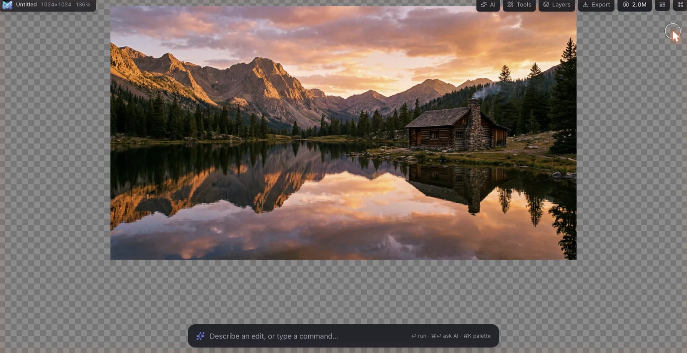
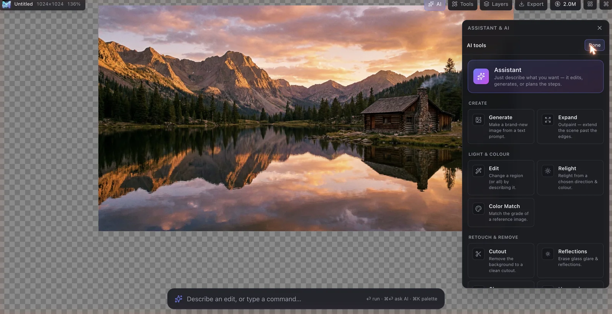
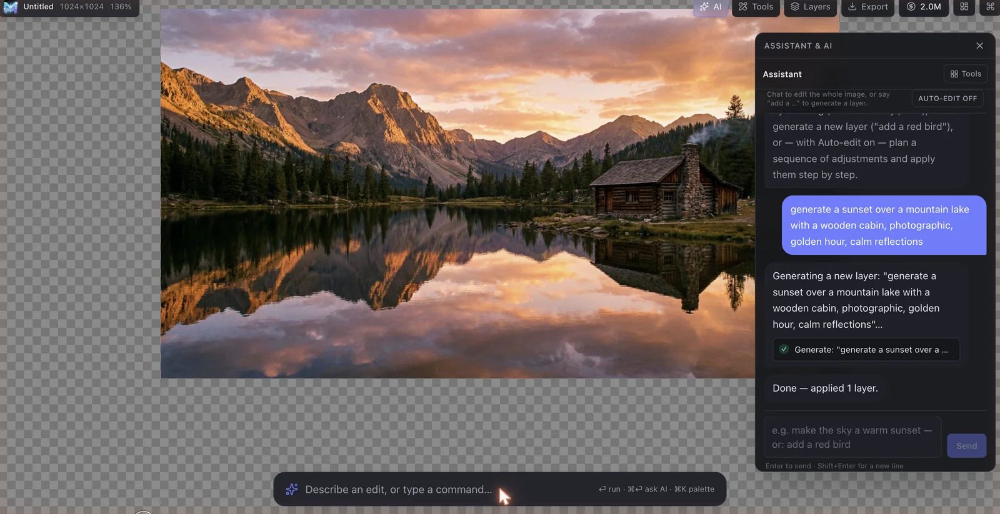
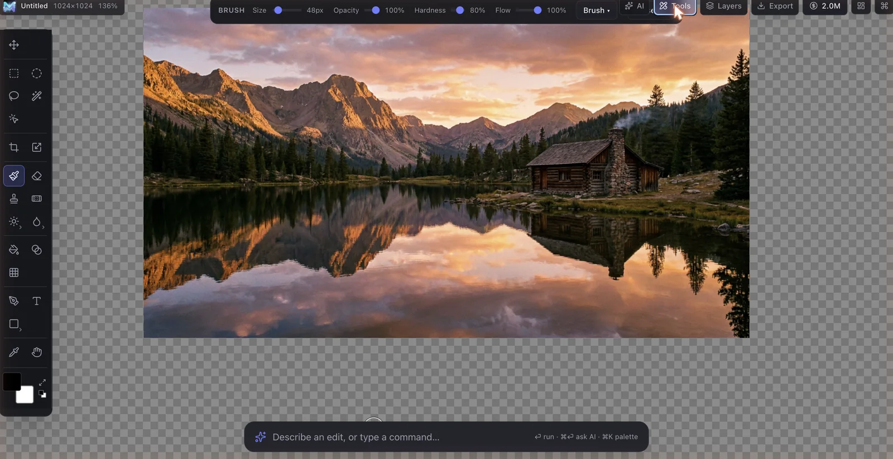

Glimmer is a real layer-based editor with a custom WebGL2 engine — and a generative AI suite woven right into the canvas. Describe an edit, generate a layer, cut out a subject, or reach for any pro tool with one keystroke.
Self-hostable · OpenRouter-powered · MIT-spirited open source

The canvas-first “omni” workspace — one bar does generation, editing, and every command.
Not a wrapper around a model, and not a toy. A genuine non-destructive editor where AI is a first-class tool next to brushes, masks and adjustment layers.
Text-to-image, generative edit & fill, background cutout, outpaint/expand, relight, colour-match, reflection & distraction removal — each lands as a non-destructive layer.
Linear-light compositing, tiled documents, the full blend-mode set, layer masks, smart filters and GPU-accelerated brushes. React never touches a pixel.
“Make the sky a warm sunset.” “Add a red bird.” The assistant edits the whole image, generates new layers, or — with Auto-edit — plans and applies a sequence of steps.
Raster, text, smart objects, groups, clipping and adjustment layers — with non-destructive layer masks, opacity and blend modes on every one.
One ⌘K palette runs any tool, adjustment, filter or AI action by name — so the chrome stays out of the way on a small laptop screen.
A Docker-Compose stack (API + workers + Postgres + Redis + MinIO) on OpenRouter. Provider keys stay server-side — the browser only ever talks to your API.
Every AI action is one click from the launcher or one phrase to the assistant — and every result is a layer you can mask, blend, or undo.

Open or drop an image, paste from the clipboard, or just describe one — Glimmer generates it as your first layer.
Ask the assistant in plain language, or summon any tool, adjustment or filter from the ⌘K palette — the canvas stays front and centre.
Every AI result and every edit is a layer with masks, opacity and blend modes. Nothing is baked in until you say so.
Flatten to PNG, JPEG or WebP — or save the full layered project as .aips to pick up later.


A two-column tool rail with contextual options for every tool, 14 adjustment layers with live Curves & Levels editors, smart filters, type on a path, the pen tool, liquify, lens blur, channels, paths and a full history.
Clone the repo, drop in an OpenRouter key, and docker compose up. Everything — engine, API, workers, storage — is yours.